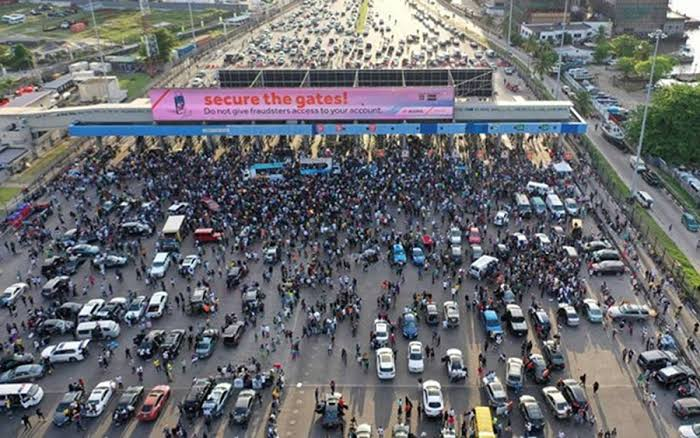

On the night of October 2020 , at about 6:50 p.m. WAT, members of the Nigerian Armed Forces opened fire at peaceful End SARS protesters at the Lekki toll gate in Lagos, Nigeria. The number of casualties are still unknown. However, there have been complaints about missing persons (friends and family members), and a few were confirmed to be hospitalized.
After visiting hospitalized casualties a day after the incident (21 October 2020), the governor of Lagos State, Babajide Sanwo-olu, initially denied any loss of life by gunfire, but later admitted that two persons were killed. Amnesty International stated that at least 12 protesters were killed in what the organisation described as "extrajudicial executions" The Nigerian Army has promptly separated themselves from the #EndSARS lekki shooting amidst their operation crocodile smile.
The military’s alleged use of brute force to quell youth protests against police brutality (tagged #EndSARS) has been condemned by many. As early as Tuesday morning, a video emerged from Ado Ekiti, Ekiti State where soldiers barricaded the Fajuyi Bridge, seeking to stop the procession of #EndSARS protesters..

In the evening of same day, the country was shocked when video clips of army personnel allegedly opening fire on peaceful #EndSARS protesters at the Lekki Toll Plaza in Lagos emerged on the social media.
The shooting allegedly led to the death of seven protesters . Expectedly, this led to public outcries against the activities of the military and its intervention in the #EndSARS protests. On October 18, the army said Operation Crocodile Smile would hold between October 20 and December 31, adding that it was meant tackle cyber warfare and insurgency in the country, particularly in the North-East, where Boko Haram insurgents had caused massive destruction.

The acting Director, Army Public Relations, Col Sagir Musa, had explained that the “exercise is deliberately intended to be all-encompassing and will include cyber warfare exercises designed to identify, track and counter negative propaganda on social media and across cyberspace. This is the first-ever cyber warfare exercise to be conducted in the history of the armed forces.”
Based on the antecedents of the military, this explanation did not go down well with many Nigerians and socio-cultural groups including the Pan Niger Delta Forum, which described the deployment of soldiers as “the most provocative at a time Nigerian youths were agitating for an end to police brutality.”
ABOUT SARS
The Special Anti-Robbery Squad was founded in late 1992 by former police commissioner Simeon Danladi Midenda.
The incident that spurred SARS' formation was Col. Rindam (Nigerian Army) death at the hands of police officers at a checkpoint in Lagos on September 1992, later leading to the arrest of three police officers. When the information reached the army, soldiers were dispatched into the streets of Lagos in search of any and all police officers.
The Nigerian police withdrew from checkpoints, security areas, and other points of interest for criminals; some police officers were said to have resigned while others fled for their lives.
Due to the absence of police for two weeks, the crime rate increased and SARS was formed with an initial force of 15, operating in secrecy to avoid the army.
Due to the existence of three already established anti-robbery squads that were operational at that time, Midenda needed to distinguish his squad from the already existing teams.
Midenda named his team Special Anti-Robbery Squad (SARS).
After months of dialogue the Nigerian Army and the Nigeria Police Force came to an understanding, and official police duties resumed in Lagos.
The SARS unit was officially commissioned in Lagos following the subsequent ceasefire.
SARS was one of the 14 units in the Force Criminal Investigation and Intelligence Department, which was established to detain, investigate, and prosecute those involved in violent crimes such as armed robbery and kidnapping, but after a while they decided to take to the street and arrest, harrass and extort innocent and unsuspecting victims which led to an uproar within the Nigerian youth